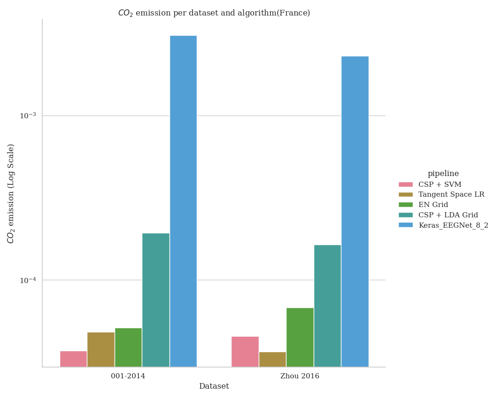

Note
Go to the end to download the full example code.
Benchmarking with MOABB showing the CO2 footprint#
This example shows how to use MOABB to track the CO2 footprint using CodeCarbon library. For this example, we will use only one dataset to keep the computation time low, but this benchmark is designed to easily scale to many datasets. Due to limitation of online documentation generation, the results are computed on a local cluster but could be easily replicated on your infrastructure.
# Authors: Igor Carrara <igor.carrara@inria.fr>
# Bruno Aristimunha <b.aristimunha@gmail.com>
# Ethan Davis <davise5@uw.edu>
#
# License: BSD (3-clause)
import matplotlib.pyplot as plt
import numpy as np
from scipy.spatial import ConvexHull
from moabb import benchmark, set_log_level
from moabb.analysis.plotting import codecarbon_plot, emissions_summary
from moabb.datasets import BNCI2014_001, Zhou2016
from moabb.paradigms import LeftRightImagery
set_log_level("info")
Loading the pipelines#
To run this example we use several pipelines, ML and DL (Keras) and also
pipelines that need an optimization of the hyperparameter.
All this different pipelines are stored in pipelines_codecarbon
Selecting the datasets (optional)#
If you want to limit your benchmark on a subset of datasets, you can use the
include_datasets and exclude_datasets arguments. You will need either
to provide the dataset’s object, or a dataset’s code. To get the list of
available dataset’s code for a given paradigm, you can use the following
command:
paradigm = LeftRightImagery()
for d in paradigm.datasets:
print(d.code)
In this example, we will use only the last dataset, ‘Zhou 2016’, considering only the first subject.
Running the benchmark#
The benchmark is run using the benchmark function. You need to specify the
folder containing the pipelines to use, the kind of evaluation and the paradigm
to use. By default, the benchmark will use all available datasets for all
paradigms listed in the pipelines. You could restrict to specific evaluation
and paradigm using the evaluations and paradigms arguments.
To save computation time, the results are cached. If you want to re-run the
benchmark, you can set the overwrite argument to True.
It is possible to indicate the folder to cache the results and the one to
save the analysis & figures. By default, the results are saved in the
results folder, and the analysis & figures are saved in the benchmark
folder.
dataset = Zhou2016()
dataset2 = BNCI2014_001()
dataset.subject_list = dataset.subject_list[:1]
dataset2.subject_list = dataset2.subject_list[:1]
datasets = [dataset, dataset2]
Configuring CodeCarbon Tracking#
The benchmark function supports CodeCarbon configuration through the
codecarbon_config parameter. This allows fine-grained control over how
emissions are tracked and reported.
CodeCarbon provides many configuration options:
- Output Options:
save_to_file(bool): Save results to CSV file (default: False)log_level(str): Logging verbosity (default: ‘error’)output_dir(str): Directory for output files (default: ‘.’)output_file(str): CSV filename (default: ‘emissions.csv’)
- Tracking Options:
tracking_mode(str): ‘machine’ for system-wide, ‘process’ for isolatedmeasure_power_secs(int): Power measurement interval in secondsexperiment_name(str): Label for the experimentproject_name(str): Project identifier
- Hardware Options:
gpu_ids(str): Comma-separated GPU IDs to trackforce_cpu_power(float): Manual CPU power in wattsforce_ram_power(float): Manual RAM power in watts
- API & Output Backends:
save_to_api(bool): Send data to CodeCarbon APIapi_endpoint(str): Custom API endpointsave_to_prometheus(bool): Push to Prometheusprometheus_url(str): Prometheus server address
- Location & Electricity:
country_2letter_iso_code(str): Country code for carbon intensityelectricitymaps_api_token(str): API token for real-time datapue(float): Power Usage Effectiveness of data center
Example 1: Basic configuration with CSV output and verbose logging Note: Using ‘process’ tracking mode requires fewer system permissions than ‘machine’ mode
codecarbon_config = {
"save_to_file": True,
"log_level": "error",
"output_file": "emissions_results.csv",
"experiment_name": "MOABB_Benchmark_Zhou2016",
"tracking_mode": "process", # Use process-level tracking to reduce permission requirements
}
results = benchmark(
pipelines="./pipelines_codecarbon/",
evaluations=["WithinSession"],
paradigms=["LeftRightImagery"],
include_datasets=datasets,
results="./results/",
overwrite=False,
plot=False,
output="./benchmark/",
codecarbon_config=codecarbon_config,
)
Benchmark prints a summary of the results. Detailed results are saved in a
pandas dataframe, and can be used to generate figures. The analysis & figures
are saved in the benchmark folder.
results.head()
order_list = [
"CSP + SVM",
"Tangent Space LR",
"EN Grid",
"CSP + LDA Grid",
]
Comprehensive CodeCarbon Visualization Analysis#
The codecarbon_plot function provides multiple visualization modes to
analyze emissions data from different perspectives. Each mode answers specific
questions about the sustainability and efficiency of your pipelines.
Visualization Mode 1: Basic CO2 Emissions (Default)#
This shows the raw CO2 emissions per dataset and algorithm. It helps you understand which combinations of dataset and pipeline produce the most emissions.
- What it shows:
X-axis: Different datasets used in benchmarking
Y-axis: CO2 emissions in kg (log scale)
Colors: Different pipeline algorithms
Best for: Understanding overall emissions impact
fig1 = codecarbon_plot(results, order_list, country="(France)")
Visualization Mode 2: Energy Efficiency Analysis#
This mode adds a subplot showing energy efficiency, calculated as: Efficiency = Accuracy Score / CO2 Emissions (kg)
Higher efficiency means the pipeline achieves better accuracy with less carbon cost. This is the key metric for sustainable machine learning.
- What it shows:
Bar chart: Pipelines ranked by energy efficiency
Values: Efficiency score (higher is better)
Colors: Pipeline identification
Best for: Identifying which pipelines are most sustainable Use case: When you care about accuracy-to-emissions ratio
fig2 = codecarbon_plot(
results,
order_list,
country="(France)",
include_efficiency=True,
)
Visualization Mode 3: Complete Analysis with Pareto Frontier#
- This comprehensive mode shows ALL three visualizations:
CO2 emissions per dataset (shows raw environmental impact)
Energy efficiency ranking (shows best accuracy/emissions ratio)
Accuracy vs emissions scatter (shows performance-sustainability trade-off)
The third plot shows the Pareto frontier: pipelines in the upper-right are Pareto-optimal (you cannot improve accuracy without increasing emissions or vice versa).
- What each plot shows:
Plot 1: Raw emissions across datasets and pipelines
Plot 2: Which pipelines are most efficient (sorted ranking)
Plot 3: Accuracy vs emissions scatter (find the best balance)
Best for: Complete sustainability analysis and informed decision-making Use case: Selecting the best pipeline considering both performance
and environmental impact
fig3 = codecarbon_plot(
results,
order_list,
country="(France)",
include_efficiency=True,
include_power_vs_score=True,
)
print("Mode 3 created: Complete analysis with Pareto frontier visualization")
CodeCarbon Configuration Examples#
Below are additional configuration examples for different use cases:
Example 2: Process-level tracking with custom tracking interval .. code-block:: python
- codecarbon_config = {
‘tracking_mode’: ‘process’, ‘measure_power_secs’: 30, ‘save_to_file’: True, ‘log_level’: ‘debug’
}
Example 3: GPU tracking with specific IDs .. code-block:: python
- codecarbon_config = {
‘gpu_ids’: ‘0,1,2’, # Track GPUs 0, 1, 2 ‘save_to_file’: True, ‘experiment_name’: ‘multi_gpu_benchmark’
}
Example 4: Real-time carbon intensity data with Electricity Maps API .. code-block:: python
- codecarbon_config = {
‘electricitymaps_api_token’: ‘your-token-here’, ‘country_2letter_iso_code’: ‘FR’, ‘save_to_file’: True, ‘output_file’: ‘emissions_real_time.csv’
}
Example 5: API-based tracking and reporting .. code-block:: python
- codecarbon_config = {
‘save_to_api’: True, ‘api_endpoint’: ‘https://api.codecarbon.io’, ‘api_key’: ‘your-api-key’, ‘project_name’: ‘MOABB_Project’
}
Example 6: Prometheus metrics export .. code-block:: python
- codecarbon_config = {
‘save_to_prometheus’: True, ‘prometheus_url’: ‘http://localhost:9091’, ‘experiment_name’: ‘moabb_metrics’
}
Example 7: Custom data center with manual power specifications .. code-block:: python
- codecarbon_config = {
‘force_cpu_power’: 150.0, # Watts ‘force_ram_power’: 20.0, # Watts ‘pue’: 1.2, # Data center PUE ‘save_to_file’: True
}
Emissions Summary Report and Analysis#
Beyond visualizations, you can generate a detailed summary report using
the emissions_summary function. This provides comprehensive metrics
for data-driven decision making.
summary = emissions_summary(results, order_list=order_list)
Creating Summary Visualizations#
Instead of text summaries, we create comprehensive visualizations that show the relationships between accuracy, efficiency, and emissions.
fig_summary, axes = plt.subplots(2, 2, figsize=(14, 10))
fig_summary.suptitle(
"Emissions Summary: Accuracy, Efficiency, and Environmental Impact",
fontsize=16,
fontweight="bold",
)
# Plot 1: Pipeline Efficiency Rankings
ax1 = axes[0, 0]
summary_sorted = summary.sort_values("efficiency", ascending=True)
colors = plt.cm.RdYlGn(
(summary_sorted["efficiency"] - summary_sorted["efficiency"].min())
/ (summary_sorted["efficiency"].max() - summary_sorted["efficiency"].min())
)
ax1.barh(range(len(summary_sorted)), summary_sorted["efficiency"], color=colors)
ax1.set_yticks(range(len(summary_sorted)))
ax1.set_yticklabels(summary_sorted.index)
ax1.set_xlabel("Efficiency (Accuracy / kg CO2)")
ax1.set_title("Pipeline Efficiency Ranking\n(Higher is Better)")
ax1.grid(axis="x", alpha=0.3)
# Plot 2: Average Emissions Comparison
ax2 = axes[0, 1]
summary_sorted_emissions = summary.sort_values("avg_emissions", ascending=False)
colors_emissions = plt.cm.Blues(np.linspace(0.4, 1, len(summary_sorted_emissions)))
ax2.bar(
range(len(summary_sorted_emissions)),
summary_sorted_emissions["avg_emissions"],
color=colors_emissions,
)
ax2.set_xticks(range(len(summary_sorted_emissions)))
ax2.set_xticklabels(summary_sorted_emissions.index, rotation=45, ha="right")
ax2.set_ylabel("Average CO2 Emissions (kg/eval)")
ax2.set_title("Carbon Footprint per Pipeline\n(Lower is Better)")
ax2.grid(axis="y", alpha=0.3)
# Plot 3: Accuracy Distribution with Standard Deviation
ax3 = axes[1, 0]
summary_sorted_score = summary.sort_values("avg_score", ascending=False)
x_pos = np.arange(len(summary_sorted_score))
ax3.bar(
x_pos,
summary_sorted_score["avg_score"],
yerr=summary_sorted_score["std_score"],
capsize=5,
color="steelblue",
alpha=0.7,
)
ax3.set_xticks(x_pos)
ax3.set_xticklabels(summary_sorted_score.index, rotation=45, ha="right")
ax3.set_ylabel("Average Score")
ax3.set_title("Accuracy Performance with Variability\n(Higher is Better)")
ax3.set_ylim([0, 1.0])
ax3.grid(axis="y", alpha=0.3)
# Plot 4: Total Emissions Summary
ax4 = axes[1, 1]
summary_sorted_total = summary.sort_values("total_emissions", ascending=False)
colors_total = plt.cm.Oranges(np.linspace(0.4, 1, len(summary_sorted_total)))
ax4.bar(
range(len(summary_sorted_total)),
summary_sorted_total["total_emissions"],
color=colors_total,
)
ax4.set_xticks(range(len(summary_sorted_total)))
ax4.set_xticklabels(summary_sorted_total.index, rotation=45, ha="right")
ax4.set_ylabel("Total CO2 Emissions (kg)")
ax4.set_title("Total Carbon Footprint per Pipeline\n(Lower is Better)")
ax4.grid(axis="y", alpha=0.3)
plt.tight_layout()
Pareto Frontier for Decision Making#
The Pareto frontier visualization helps identify the best trade-off between accuracy and environmental impact. Points on the frontier are Pareto-optimal: you cannot improve accuracy without increasing emissions or vice versa.
fig_pareto, ax = plt.subplots(figsize=(10, 8))
# Calculate Pareto frontier
points = summary[["avg_score", "avg_emissions"]].values
hull = ConvexHull(points)
frontier_indices = hull.vertices
# Plot all pipelines
for idx, pipeline in enumerate(summary.index):
if idx in frontier_indices:
ax.scatter(
summary.loc[pipeline, "avg_emissions"],
summary.loc[pipeline, "avg_score"],
s=300,
alpha=0.8,
edgecolors="darkgreen",
linewidth=2,
label=pipeline if idx < 3 else "",
)
else:
ax.scatter(
summary.loc[pipeline, "avg_emissions"],
summary.loc[pipeline, "avg_score"],
s=200,
alpha=0.5,
color="gray",
)
ax.annotate(
pipeline,
(summary.loc[pipeline, "avg_emissions"], summary.loc[pipeline, "avg_score"]),
xytext=(5, 5),
textcoords="offset points",
fontsize=9,
)
# Highlight Pareto frontier
frontier_points = points[frontier_indices]
frontier_points = frontier_points[np.argsort(frontier_points[:, 0])]
ax.plot(
frontier_points[:, 0],
frontier_points[:, 1],
"g--",
linewidth=2,
label="Pareto Frontier",
)
ax.set_xlabel("Average CO2 Emissions (kg/eval)", fontsize=12)
ax.set_ylabel("Average Accuracy Score", fontsize=12)
ax.set_title(
"Pareto Frontier: Accuracy vs Emissions Trade-off", fontsize=14, fontweight="bold"
)
ax.grid(True, alpha=0.3)
ax.legend(loc="best")
- The result expected will be the following image, but varying depending on the
machine and the country used to run the example.

Run this example